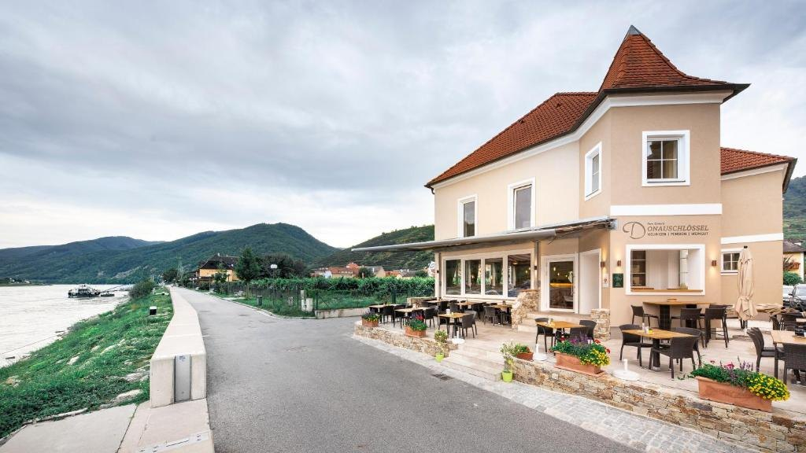
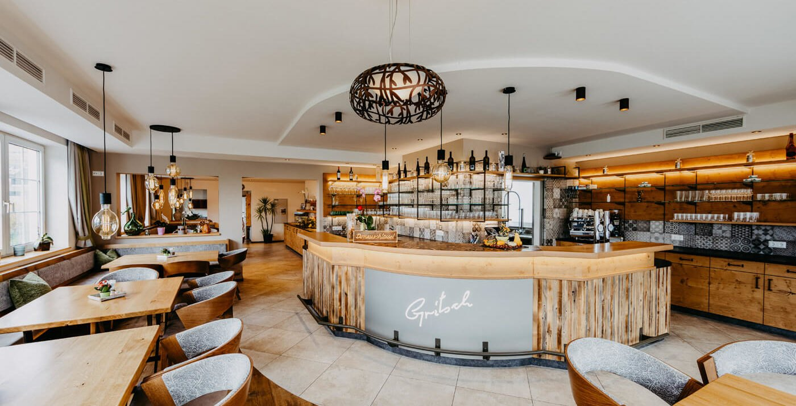

🌦️ Wetter Aggsbach Markt
Wetter wird geladen …

Zuhause am Bach · Aggsbach Markt
Eure digitale Gäste-App für Wachau, Welterbesteig, Donauradweg und die Wilden Wachauer Windis.
Alles Wichtige auf einen Blick: Wetter, Tour, Rad, Fähren, Wachaubahn und schnelle Hilfe.
Wetter wird geladen …
Bei trockenem Wetter: kurze Runde oder Welterbesteig. Bei Regen: Schlechtwetterprogramm.
Touren öffnenMelk, Spitz, Dürnstein oder Krems – bitte Wind, Fähren und Rückfahrt prüfen.
Rad-Assistent öffnenVor dem Start direkt prüfen.
Wachaubahn Fähre SpitzWetter morgen, Frühstück, Tour, Fähren, Gepäck und Buchung vorbereiten.
Wetter für morgen wird geladen …
Für Welterbesteig-Gäste bitte Zieladresse und Uhrzeit angeben.
Der schnelle 3-Klick-Assistent: Zeit, Begleitung und Wetter wählen – dann empfiehlt die App automatisch die passende Wachau-Tour.
Die passende Route wird direkt im Touren-Assistenten geöffnet.
Wählt, was zu euren Beinen, Wetter und Zeit passt. Die passende Wanderkarte und Route erscheinen darunter.
Für Wanderer, Radfahrer und müde Beine: ein Klick, WhatsApp öffnet mit vorbereitetem Text.
Ideal am Welterbesteig. Ziel, Uhrzeit und Gepäckstücke ergänzen.
Standard, vegetarisch oder vegan – oben im Morgen-Assistenten auswählbar.
Frühstück wählenWurst-/Käseplatte oder einfache Jause nach Verfügbarkeit.
Anreise, Schlüssel, Tourenfrage oder schnelle Hilfe.
Kulturklassiker bei Regen.
KarteGeschichte und ruhiger Ausflug.
KarteEinkehr, Donau, Wachauer Küche.
WebseiteAktuell prüfen, wer ausgesteckt hat.
HeurigenkalenderPersönliche Empfehlung von Hans, Laura, Fidel, Gloria und Pia.


Regional essen, Wachauer Weine genießen und direkt an der Donau sitzen.
Adresse: Donaulände 3, 3620 Spitz
Telefon: +43 664 9156901
Nach einer Wanderung oder Radtour: Donauterrasse, Wachauer Küche und ein ruhiger Blick auf den Fluss.
Öffnungszeiten bitte vor Besuch prüfen.
Spielerisch die Wachau entdecken – mit Fidel, Gloria und Pia.
10 Fragen zu Fidel, Gloria, Pia und der Wachau.
Hakt ab, was ihr gefunden habt. Am Ende seid ihr Wachau-Entdecker.
112 Euro-Notruf · 144 Rettung · 133 Polizei · 122 Feuerwehr
112 anrufenBei Fragen, Anreise, Gepäck oder Orientierung.
Hans anrufenWenn es euch gefallen hat, hilft eine Bewertung einem kleinen Gastgeberbetrieb sehr.
Google Bewertung suchenBei den Touren einen Button drücken. Danach ändern sich Beschreibung, Karte und Routenlink direkt darunter.
Frühstück, Gepäck und Hilfe öffnen WhatsApp mit vorbereitetem Text. Vor dem Senden bitte fehlende Angaben ergänzen.
Live-Wetter funktioniert online über GitHub Pages. Wenn nichts lädt, bitte externe Wetterseite nutzen.
Wenn Buttons nicht reagieren: App-Cache löschen und neu laden.
Für Gastgeber: Prüft, ob die wichtigsten App-Bereiche geladen sind.